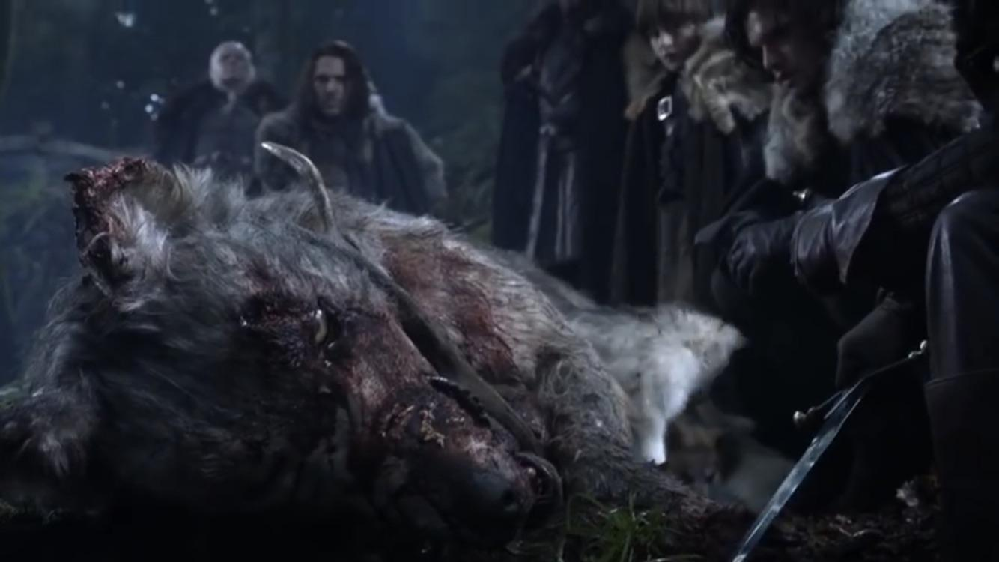
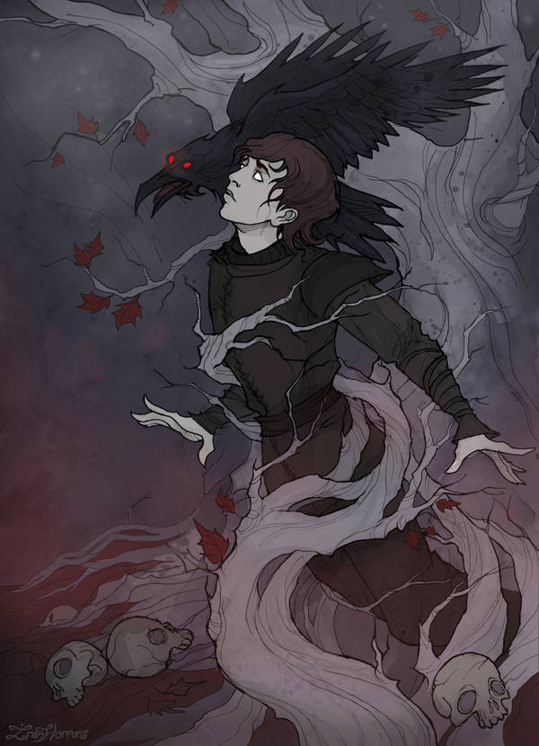
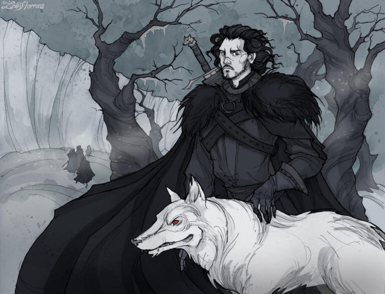
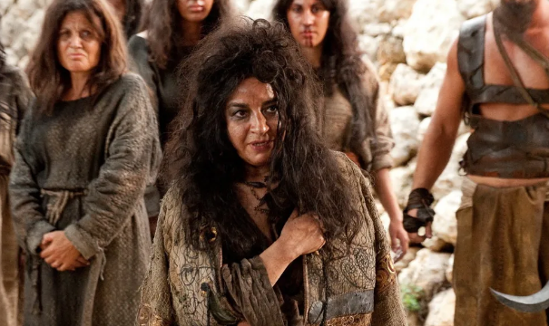
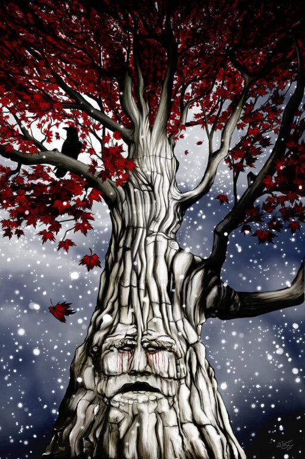
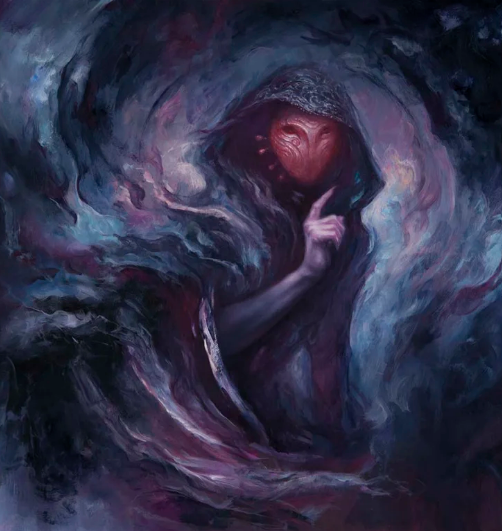
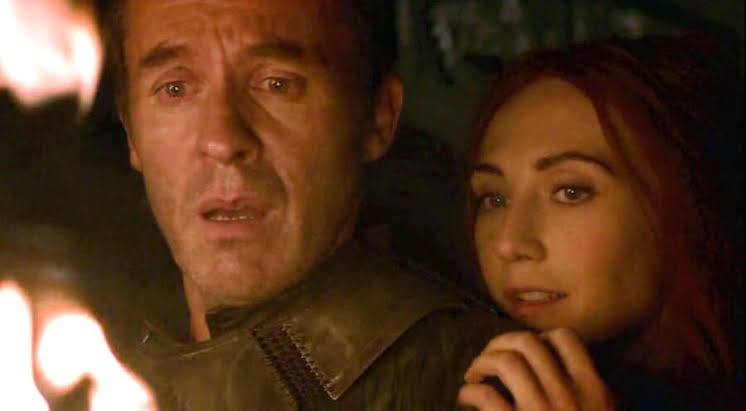

Lore Explainer: Prophecy In The World of Ice and Fire Part 1
A Song of Ice and Fire and its related writings (Dunk & Egg, Fire & Blood, etc.) are stuffed to the gills with prophetic dreams and visions, almost all of which are excised completely from the TV shows, from the Old Gods visions of Bran, Jon, and Arya, through the prophecies of Melisandre and various witchy characters, to the Dragon dreams of various Targaryen characters; GRRM likes for the prophecies in his dreams to be true signposts to future events, but the prophecies are delivered mostly through metaphor and vague imagery, and often resolve in unexpected ways. As Archmaester Marwyn puts it: Prophecy will bite your prick off every time.
As the resident Song of Ice and Fire superfan, I figured, “What could be more fun than going through the prophecies and visions in the book one-by-one and explaining how they resolve or how I think they’ll resolve?” So that’s what I’m going to do; wish me luck!
This article will contain spoilers for all of the Song of Ice and Fire writings, up to and including the Winds of Winter sample chapters, Dunk & Egg, Fire and Blood, the lot. In particular, if you haven’t read the Winds of Winter sample chapters, you should go and do that first and then come back here. If you don’t want to know what happens, don’t read this article; you have been warned!
A Game of Thrones
The Direwolf

Copyright - HBOThe very first book starts out with, if not an outright prophecy, what we could call a “portent”. The Starks stumble upon a dead direwolf with 6 puppies, five grey, one white. While the kids are getting gooey-eyed over the puppies, Ned Stark looks for and locates the cause of death - the Direwolf has a foot of snapped-off antler buried in its neck. This is clearly a portent of Ned’s death at the climax of the novel; the sigil of House Stark is the direwolf, Ned has 5 trueborn children and 1 bastard, and he is killed by a Baratheon (whose sigil is the stag), either directly (if Joffrey is considered a Baratheon) or indirectly (Robert’s request leads Ned into the situation whereby he is killed).
Waking the Dragon
“Yet that night she dreamt of one. Viserys was hitting her, hurting her. She was naked, clumsy with fear. She ran from him, but her body seemed thick and ungainly. He struck her again. She stumbled and fell. “You woke the dragon,” he screamed as he kicked her. “You woke the dragon, you woke the dragon.” Her thighs were slick with blood. She closed her eyes and whimpered. As if in answer, there was a hideous ripping sound and the crackling of some great fire. When she looked again, Viserys was gone, great columns of flame rose all around, and in the midst of them was the dragon. It turned its great head slowly. When its molten eyes found hers, she woke, shaking and covered with a fine sheen of sweat. She had never been so afraid …”- Daenerys II, AGOT
Before her wedding, Dany dreams of being attacked by Viserys and a dragon - this is clearly a reference to Daenerys’ failed pregnancy (thighs slick with blood, hideous ripping sound) and the subsequent birth of her dragons (great columns of fire rose all around - referring to the funeral pyre of Drogo from which the dragons emerge).

Bran Stark - Credit: IrenHorrorsBran’s Coma Dreams
At the end of Bran’s coma, just before he wakes up, he has visions as part of a broader scene where the three-eyed crow (later revealed to be Bloodraven) tries to open his third eye by making him do some impromptu parachute-free skydiving. He sees events that are currently happening elsewhere in the world, and also into the Heart of Winter, where he sees something terrifying, but it’s not articulated exactly what such a thing might be.
“He looked east, and saw a galley racing across the waters of the Bite. He saw his mother sitting alone in a cabin, looking at a bloodstained knife on a table in front of her, as the rowers pulled at their oars and Ser Rodrik leaned across a rail, shaking and heaving. A storm was gathering ahead of them, a vast dark roaring lashed by lightning, but somehow they could not see it.”Bran II – AGOT
Clearly refers to events occurring concurrently with Bran’s coma, at the same time Cat and Sir Rodrik are indeed taking a boat from White Harbour to King’s Landing, hoping to get to the capital before Ned. Cat is looking at the dagger with which the catspaw tried to kill Bran, and Ser Rodrik is seasick. The storm gathering ahead of them clearly refers to the turmoil that the news Cat is bringing will kick off.
“He looked south, and saw the great blue-green rush of the Trident. He saw his father pleading with the king, his face etched with grief. He saw Sansa crying herself to sleep at night, and he saw Arya watching in silence and holding her secrets hard in her heart. There were shadows all around them. One shadow was dark as ash, with the terrible face of a hound. Another was armored like the sun, golden and beautiful. Over them both loomed a giant in armor made of stone, but when he opened his visor, there was nothing inside but darkness and thick black blood.”Bran II – AGOT
More events occurring at the same time as Bran’s coma, depicting Ned pleading with Robert not to kill Sansa’s direwolf, Sansa crying over the death of her Direwolf, and Arya’s guilt over the episode. Two of the shadows are easily identified; the one with “the terrible face of a Hound” is… The Hound, Sandor Clegane, easy. The second is clearly Jaime Lannister. The identity of the third (the stone giant) is much less certain; it could be Gregor Clegane, but he isn’t with the king’s party at that time. Some believe that the empty visor with thick black blood is a prophetic revelation of Gregor Clegane’s zombified existence in later books – he might be headless because Clegane’s skull is delivered to Dorne in Book 4.
“He lifted his eyes and saw clear across the narrow sea, to the Free Cities and the green Dothraki sea and beyond, to Vaes Dothrak under its mountain, to the fabled lands of the Jade Sea, to Asshai by the Shadow, where dragons stirred beneath the sunrise.”Bran II – AGOT
Almost matches the journey Daenerys will make, starting out at Pentos, going through the Dothraki Sea, to Vaes Dothrak, and then onto Qarth by the Jade Sea after Drogo’s death and the dragon’s birth. Some fans interpret this to mean that Daenerys will go to Asshai, but I would mark this one down as a failed prophecy (of which there are plenty), severed when Daenerys made the choice to go to Slaver’s Bay instead of Asshai.

Jon Snow & Ghost - Credit: IrenHorrorsJon’s Crypt Dream
“He had never told anyone of the dream, and he did not understand why he was telling Sam now, yet somehow it felt good to talk of it. “Even the ravens are gone from the rookery, and the stables are full of bones. That always scares me. I start to run then, throwing open doors, climbing the tower three steps at a time, screaming for someone, for anyone. And then I find myself in front of the door to the crypts. It’s black inside, and I can see the steps spiraling down. Somehow I know I have to go down there, but I don’t want to. I’m afraid of what might be waiting for me. The old Kings of Winter are down there, sitting on their thrones with stone wolves at their feet and iron swords across their laps, but it’s not them I’m afraid of. I scream that I’m not a Stark, that this isn’t my place, but it’s no good, I have to go anyway, so I start down, feeling the walls as I descend, with no torch to light the way. It gets darker and darker, until I want to scream.” He stopped, frowning, embarrassed. “That’s when I always wake.” His skin cold and clammy, shivering in the darkness of his cell. Ghost would leap up beside him, his warmth as comforting as daybreak.”Jon V - AGOT
Jon dreams about going down into the Winterfell crypts (which are pretty scary) - Jon’s insistence that the crypts are not “his place” while still being forced to go down into them has been taken by some fans as a hint that evidence of Jon’s true parentage was hidden by Ned in Lyanna’s grave.
The Stallion That Mounts The World
“As swift as the wind he rides, and behind him his khalasar covers the earth, men without number, with arakhs shining in their hands like blades of razor grass. Fierce as a storm this prince will be. His enemies will tremble before him, and their wives will weep tears of blood and rend their flesh in grief. The bells in his hair will sing his coming, and the milk men in the stone tents will fear his name.” The old woman trembled and looked at Dany almost as if she were afraid. “The prince is riding, and he shall be the stallion who mounts the world.”Danerys V - AGOT
Either interrupted by the premature birth of Dany’s stillborn deformed son, or it’s a misunderstood/symbolic oblique reference to Daenerys’ dragon Drogon.
Arya’s Dream
“When they had first come to King’s Landing, she used to have bad dreams about getting lost in the castle. Father said the Red Keep was smaller than Winterfell, but in her dreams it had been immense, an endless stone maze with walls that seemed to shift and change behind her. She would find herself wandering down gloomy halls past faded tapestries, descending endless circular stairs, darting through courtyards or over bridges, her shouts echoing unanswered. In some of the rooms the red stone walls would seem to drip blood, and nowhere could she find a window. Sometimes she would hear her father’s voice, but always from a long way off, and no matter how hard she ran after it, it would grow fainter and fainter, until it faded to nothing and Arya was alone in the dark.”Arya III – AGOT
Arya has a somewhat trippy dream about an M.C Escher-esque Red Keep that morphs into a shifting labyrinth that goes on forever, complete with Amityville Horror-style walls dripping blood. You could argue that this whole vision foreshadows Arya’s journey through the story, getting cut off from her family, journeying through horrors, and landing at the House of Black and White in Braavos (where she is actually temporarily blinded).
Bran & Rickon’s Crypt Dreams
““I dreamed about the crow again last night. The one with three eyes. He flew into my bedchamber and told me to come with him, so I did. We went down to the crypts. Father was there, and we talked.He was sad.”“And why was that?” Luwin peered through his tube.
“It was something to do about Jon, I think.” The dream had been deeply disturbing, more so than any of the other crow dreams..”
[...]
“You let my father be,” Rickon warned Luwin. “You let him be.”
“Rickon,” Bran said softly. “Father’s not here.”
“Yes he is. I saw him.” Tears glistened on Rickon’s face. “I saw him last night.”
“In your dream …?”
Rickon nodded. “You leave him. You leave him be. He’s coming home now, like he promised. He’s coming home.”
Bran VII – AGOT
Immediately after Ned’s execution in King’s Landing, both Bran and Rickon have dreams of the ghost of Ned Stark down in the Winterfell crypts. Bran, Osha, and Maester Luwin go down into the crypts, ostensibly to show Bran that his vision was just a dream. However, Rickon is already there and reports having the same dream. After a bit of back and forth and a history lesson, the Direwolves howl briefly before the raven carrying the news of Ned’s death, feathers bloody, arrives at Winterfell.
It’s not really even a prophecy, per se, but it does show that Bran and Rickon are acquiring a kind of mystical foresight through their connection to the wolves.
Mirri Maz Duur’s Prophecy

Copyright: HBO“When the sun rises in the west and sets in the east,” said Mirri Maz Duur. “When the seas go dry and mountains blow in the wind like leaves. When your womb quickens again, and you bear a living child. Then he will return, and not before.”
It’s debatable whether this is a genuine prophecy or a curse laid on Daenerys by Mirri Maz Duur to scare her. Even so, there are some events in later books that, if you squint a bit, could resemble some kind of fulfilment here - in particular, Quentyn Martell (whose sigil is a sun and spear) does indeed “rise in the west” (Westeros) before travelling to Meereen and dying (which could be described as setting in the east). Additionally, one of the pyramids in Meereen is burned by one of Daenerys’ dragons before collapsing, which might fulfil the requirement of a mountain “blow[ing] in the wind like leaves”.
This is all a bit of a reach, to be sure, but it would certainly be in keeping with the themes of the book if Mirri Maz Duur made a spiteful false prophecy that came true by the sheer power of narrative contrivance.
A Clash of Kings
Patchface’s Song
“Clever bird, clever man, clever clever fool,” said Patchface, jangling. “Oh, clever clever clever fool.” He began to sing. “The shadows come to dance, my lord, dance my lord, dance my lord,” he sang, hopping from one foot to the other and back again. “The shadows come to stay, my lord, stay my lord, stay my lord.” He jerked his head with each word, the bells in his antlers sending up a clangor.”Cressen - ACoK
It’s pretty clear that this little repeated song is in reference to Melisandre’s ability to create the shadow assassins that will kill Renly and Courtnay Penrose, from Stannis’ life force, potentially extracted via sexual intercourse.
Renly’s Fate
Stannis looked at his lady with narrowed eyes, until Cressen could not hold his tongue. “It is not to be thought. Your Grace, whatever follies Renly has committed—”“Follies? I call them treasons.” Stannis turned back to his wife. “My brother is young and strong, and he has a vast host around him, and these rainbow knights of his.”
“Melisandre has gazed into the flames, and seen him dead.”
Cressen - ACoK
Since Melisandre will ultimately be the one who causes Renly’s death, it’s hard to decide whether to classify this as a prophecy or a statement of intent, but it does at least come true.
Tree Dreams

A Weirwood Tree - Credit: 25tachigami“They dream tree dreams. I dream of a tree sometimes. A weirwood, like the one in the godswood. It calls to me. The wolf dreams are better. I smell things, and sometimes I can taste the blood.”Bran I - ACoK
This is potentially a reference to the location where Bran begins his greenseer training, a cave covered in weirwood roots.
The end of this sentence, where Bran describes his dreams as “I can taste the blood”, also has a distant echo in Bran’s final chapter in A Dance With Dragons, which ends with the phrase “Brandon Stark could taste the blood”.
Green Dreams
“I dreamed of a winged wolf bound to earth with grey stone chains,” he said. “It was a green dream, so I knew it was true. A crow was trying to peck through the chains, but the stone was too hard and his beak could only chip at them.”“Did the crow have three eyes?”
Jojen nodded.
– Bran, ACoK
Jojen’s dream is a metaphorical depiction of the Three-Eyed Crow’s attempt to awaken Bran to his full powers before the coming catastrophe occurs.
“Jojen, up the tree.”“There’s no need. Today is not the day I die.”
“Do it!” she screamed
Shortly afterwards, Jojen and Meera are menaced by the direwolves bonded to Bran and Rickon Stark – Jojen is not particularly distressed, as he claims to know the date of his death.
The Roast
“You were sitting at supper, but instead of a servant, Maester Luwin brought you your food. He served you the king’s cut off the roast, the meat rare and bloody, but with a savory smell that made everyone’s mouth water. The meat he served the Freys was old and grey and dead. Yet they liked their supper better than you liked yours.”
Another good example of prophecy in the world of Ice and Fire being cloaked in metaphor and allegory. Jojen’s prophecy is revealed as true when, in the next chapter, Maester Luwin delivers news of military victory in the south – Robb Stark surprised the Lannisters at Oxcross and gave them a damn good thumping. Bran is somewhat cheered by this news, but he also continues to worry about what Robb’s absence means for the safety of the North. He also informs the Frey cousins staying at Winterfell that the heir to The Crossing has died. Rather than being sad, they’re pretty pleased about this, as it moves them up the line of succession to The Crossing. It’s pretty clear that this fulfils all the details of Jojen’s prophecy, and Bran understands this too - from that point on, he begins to believe in Jojen’s insight as well.
“Bran got a sick feeling in his belly. They like the taste of this dish better than I do.”
The Sea
Very soon after Bran realises the truth of Jojen’s dreams, he’s hit with another:
“I dreamed that the sea was lapping all around Winterfell. I saw black waves crashing against the gates and towers, and then the salt water came flowing over the walls and filled the castle. Drowned men were floating in the yard. When I first dreamed the dream, back at Greywater, I didn’t know their faces, but now I do. That Alebelly is one, the guard who called our names at the feast. Your septon’s another. Your smith as well. [...] In the dark of night the salt sea will flow over these walls,” said Jojen. “I saw the dead, bloated and drowned.”
Jojen’s vision is very evocative, but as Bran points out, the sea is actually a long way away from Winterfell. This prophecy does come true, however; the sea being referred to is not the literal sea, but Theon Greyjoy’s Ironborn, who do indeed arrive in the night and capture Winterfell. The Ironborn are a culture closely associated with piracy and seafaring, with the sea being used to refer to them obliquely through metaphor.
Long Red Blade
Jojen Reed is a fountain of prophecy during his time at Winterfell; in the very same chapter, he warns about the sea coming to Winterfell; he gives a warning about the arrival of “Reek” (Ramsay Snow in disguise).
“Jojen spoke as if every word pained him. “I dreamed of the man who came today, the one they call Reek. You and your brother lay dead at his feet, and he was skinning off your faces with a long red blade. [...] I saw you and Rickon in your crypts, down in the dark with all the dead kings and their stone wolves.”
This prophecy is handily fulfilled when “Reek” skins the corpses of the Miller’s boys killed by Theon to cover up Bran and Rickon’s escape. Jojen correctly identifies the event, but misidentifies the bodies as being those of Bran and Rickon. He does, however, correctly predict that Bran and Rickon will be in the crypts; he misconstrues this as them being dead, when in reality they’re merely hiding in the crypts because Theon doesn’t look for them there.
To Go North, You Must Journey South

Quaithe - Copyright: Fantasy Flight Games“To go north, you must journey south. To reach the west, you must go east. To go forward you must go back, and to touch the light you must pass beneath the shadow.”
A cryptic statement very typical of Quaithe, this one’s been debated up and down and back and forth for a very long time - the most prevalent explanation is that, since “Planetos” is round, in order to arrive in Westeros, Daenerys should go east and approach it from the other side. Since Daenerys doesn’t do this, it’s hard to tell whether this is a prophecy interrupted, whether it’s something Daenerys will do later, or a riddle designed to confuse.
Daenerys in the House of the Undying
Ok this is probably the longest and most complicated section of prophecies and visions in the entire series, and fans have a lot to say about it, so it’ll take a fair bit of dissection - get comfy!
Daenerys enters the mysterious House of the Undying in Qarth, is given drugs, and is then presented with a rapid-fire barrage of visions. Here they are, in order:
“In one room, a beautiful woman sprawled naked on the floor while four little men crawled over her. They had rattish pointed faces and tiny pink hands, like the servitor who had brought her the glass of shade. One was pumping between her thighs. Another savaged her breasts, worrying at the nipples with his wet red mouth, tearing and chewing.”
This is fairly obviously a metaphorical depiction of the War of the Five Kings, although since Renly has already died at this point, there are only four nasty little men savaging the beautiful woman (representative of Westeros).
“Farther on she came upon a feast of corpses. Savagely slaughtered, the feasters lay strewn across overturned chairs and hacked trestle tables, asprawl in pools of congealing blood. Some had lost limbs, even heads. Severed hands clutched bloody cups, wooden spoons, roast fowl, heels of bread. In a throne above them sat a dead man with the head of a wolf. He wore an iron crown and held a leg of lamb in one hand as a king might hold a scepter, and his eyes followed Dany with mute appeal.”
Very clearly a metaphorical depiction of the Red Wedding, which won’t happen until the next book.
“Finally a great pair of bronze doors appeared to her left, grander than the rest. They swung open as she neared, and she had to stop and look. Beyond loomed a cavernous stone hall, the largest she had ever seen. The skulls of dead dragons looked down from its walls. Upon a towering barbed throne sat an old man in rich robes, an old man with dark eyes and long silver-grey hair. “Let him be king over charred bones and cooked meat,” he said to a man below him. “Let him be the king of ashes.” Drogon shrieked, his claws digging through silk and skin, but the king on his throne never heard, and Dany moved on.”
A vision of Daenerys’ father, Aerys “The Mad King”, ordering the burning of King’s Landing at the end of Robert’s Rebellion.
““The man had her brother’s hair, but he was taller, and his eyes were a dark indigo rather than lilac. “Aegon,” he said to a woman nursing a newborn babe in a great wooden bed. “What better name for a king?”“Will you make a song for him?” the woman asked.
“He has a song,” the man replied. “He is the prince that was promised, and his is the song of ice and fire.” He looked up when he said it and his eyes met Dany’s, and it seemed as if he saw her standing there beyond the door. “There must be one more,” he said, though whether he was speaking to her or the woman in the bed she could not say. “The dragon has three heads.” He went to the window seat, picked up a harp, and ran his fingers lightly over its silvery strings.””
This actually is Daenerys’ elder brother Rhaegar, who died before she was born. He’s naming his first son and talking to his wife Elia Martell about a different prophecy - the prince that was promised, a messianic figure that will rescue the world of mankind from the Others.
Some time after this, Daenerys comes to a room with a bunch of Undying Ones in it... Or so it appears. They present themselves as beautiful, fabulously dressed wizards, but through her dragon’s instincts, she instead comes across their true forms - a congregation of what appear to be mummified corpses that don’t breathe or move, but can whisper. They give her cryptic messages and trippy visions.
“. . . mother of dragons . . . child of three . . .”
This phrase is a little confusing; it could be a reference to Daenerys simply being the youngest of three children, though that wouldn’t be very mystical. It could be a reference to her ancestor Aegon the Conqueror and his two sister-wives. But again, that would be strange; Aegon’s line of descent only continues through his children by Rhaenys. Visenya’s son Maegor died without issue, so Daenerys can’t be descended from all three of them.
“ . . . three heads has the dragon . . .”
Probably a reference both to Aegon, Rhaenys, and Visenya – the trinity that gives the Targaryen dragon sigil its three heads, or a reference to Daenerys having three dragons.
“. . . mother of dragons . . . child of storm . . .”
This one is simple: Daenerys was born during a storm, hence the epithet she sometimes uses - Stormborn.
“three fires must you light . . . one for life and one for death and one to love . . .. . . three mounts must you ride . . . one to bed and one to dread and one to love . . .
three treasons will you know . . . once for blood and once for gold and once for love . . .”
These lines suggest that, either in the past or now, Daenerys will do each of these things three times.
The first of each of these categories is fairly easy to sus out: The fire for life could be the funeral pyre that hatched her dragons and changed the world. The mount to bed is presumably Daenerys’ horse, which she rides on the night she loses her virginity to Khal Drogo. The treason for blood is probably Mirri Maz Duur’s intentionally botched medical treatment of Drogo and then the blood magic ritual that took the life of Daenerys’ son Rhaego.
The fire for death is more puzzling, since Drogon burns the House of the Undying minutes after this prophecy is given; that could be the fire for death. An alternative candidate for the fire for death could be the liberation of the Unsullied, kicked off when Drogon burns one of the Wise Masters of Astapor.
The mount to dread is probably Drogon - it hasn’t happened yet, but it’s almost certain that Daenerys will ride him into battle at some point.
The treason for gold could be Jorah Mormont selling information on Daenerys to Varys’ agents… but it could also be Daario Naharis doing something treacherous for money, since he’s a disreputable sellsword.
As for the final three, it seems likely that they refer to the same person. Maybe Daenerys will fall in love with someone (possibly Jon Snow?) who will ultimately betray her out of love.
Right before they flip the switch and attack her, the Undying assail Daenerys with rapid-fire visions, again, in groups of three with a common theme.
“Viserys screamed as the molten gold ran down his cheeks and filled his mouth. A tall lord with copper skin and silver-gold hair stood beneath the banner of a fiery stallion, a burning city behind him. Rubies flew like drops of blood from the chest of a dying prince, and he sank to his knees in the water and with his last breath murmured a woman’s name. . . . mother of dragons, daughter of death . . .”
Each of these “daughter of death” visions represents someone Daenerys has lost: first, her abusive psychopath brother; second, her unborn son and the person he could have grown up to be; third, her eldest brother Rhaegar, who was slain by Robert at the Battle of the Trident before Daenerys was born.
“Glowing like sunset, a red sword was raised in the hand of a blue-eyed king who cast no shadow. A cloth dragon swayed on poles amidst a cheering crowd. From a smoking tower, a great stone beast took wing, breathing shadow fire. . . . mother of dragons, slayer of lies . . .”
Another trio of visions, this time related to “lies” that Daenerys will slay. The blue-eyed king with the glowing red sword is almost certainly Stannis (the Mannis), the implication being that the magic sword he claims to possess is, as other characters will remark upon throughout the series, not genuine, and is powered by some kind of trickery (probably Melisandre’s doing). The second, the so-called “Mummer’s Dragon” probably refers to the individual presenting themselves as her nephew “Aegon Targaryen”, but who is probably a pretender - the implication is that Daenerys will come into conflict with this pretender and either expose his lies or just kill him.
The great stone beast flying from a smoking tower and breathing shadow fire is much harder to pin down. Melisandre talks of waking a dragon from stone, but the creature being referred to as a “beast” rather than a dragon is interesting, as it leaves open the possibility that the individual being referred to is the Griffin Jon Connington, who will later become afflicted with greyscale - the disease which sort of turns people to stone.
“Her silver was trotting through the grass, to a darkling stream beneath a sea of stars. A corpse stood at the prow of a ship, eyes bright in his dead face, grey lips smiling sadly. A blue flower grew from a chink in a wall of ice, and filled the air with sweetness. . . . mother of dragons, bride of fire . . .”
This next trio of visions ends with “Bride of fire”, which could be taken to mean that this triad refers to men that Daenerys will marry in her life. The first sentence clearly refers once again to the night Daenerys lost her virginity to Khal Drogo, and since they did get married, we can probably tick that one off. The second one is interesting, because it appears to suggest that Daenerys will marry a Greyjoy. Why? The references to ships, with which the Greyjoys are closely associated, and the “grey lips smiling sadly” - Grey Joy, geddit? Ok, so it’s not a perfect metaphor since the lips are smiling sadly; I think it’s pretty safe to assume that Daenerys will be married to either Victarion or Euron Greyjoy, possibly against her will.
It’s probably a safe bet to assume that Daenerys will marry or form a romantic relationship with Jon Snow. This does require jumping through a hurdle or two; Lyanna Stark is noted again and again as loving Blue Winter Roses throughout the narrative. If we assume that she is indeed Jon Snow’s mother, we can read the blue flower growing through a hole in a wall of ice as an oblique reference to Jon at The Wall. The fact that this flower also fills the air with sweetness suggests that any love between Dany and Jon will be genuine, which is nice.
“Ten thousand slaves lifted bloodstained hands as she raced by on her silver, riding like the wind. “Mother!” they cried. “Mother, mother!” They were reaching for her, touching her, tugging at her.”
This is going to happen when Daenerys liberates the slaves of Yunkai in A Storm of Swords.
Theon’s Dream
Although Theon isn’t as magically attuned as the Starks, Daenerys, or Jojen Reed, he still has a prophetic dream of his own. Once he’s captured Winterfell, but has lost Bran and Rickon, and is at risk of losing Winterfell too, he dreams about the feast held when King Robert arrived at Winterfell, but notices that all the people present are dead people he’s known. The king with a gash across his belly, headless Ned Stark, etc.
“And then the tall doors opened with a crash, and a freezing gale blew down the hall, and Robb came walking out of the night. Grey Wind stalked beside, eyes burning, and man and wolf alike bled from half a hundred savage wounds.”
This dream serves both as a manifestation of Theon’s guilt for betraying Robb, but also foreshadows the Red Wedding, with Robb and Grey Wind coming to join the feast of the dead - implying both that Robb will die and that his death will happen at a feast.
Jon’s Wolf Dream
While in the mountains with Qorhin Halfhand, Jon experiences a wolf dream, experiencing a dream through the persona of Ghost. While inside, Jon (and by extension, the reader) is privy to the thoughts of the wolf. It seems that somehow, through some old gods voodoo, Ghost is aware that Lady is dead, and the rest of the wolves are scattered to the wind. He howls for them, and Jon (inside) hears his name as a reply from a Weirwood tree; the tree is young, but grows quickly and has Bran’s face (with three eyes).
“He sniffed at the bark, smelled wolf and tree and boy, but behind that there were other scents, the rich brown smell of warm earth and the hard grey smell of stone and something else, something terrible. Death, he knew. He was smelling death. He cringed back, his hair bristling, and bared his fangs.“Don’t be afraid, I like it in the dark. No one can see you, but you can see them. But first you have to open your eyes. See? Like this. And the tree reached down and touched him.””
The smells of stone, earth, and death are probably in reference to the crypts where Bran is currently hiding from Theon’s Ironborn, but could also be referring to Bloodraven’s cave where Bran learns to use the power of Greensight and the Weirwood trees. Indeed, three books later, Bloodraven will tell Bran something similar:
“Never fear the darkness, Bran. The strongest trees are rooted in the dark places of the earth. Darkness will be your cloak, your shield, your mother’s milk. Darkness will make you strong.”
As soon as Weirwood Bran touches Jon, he’s pushed fully into Ghost’s body and truly skinchanges for the first time, seeing the scale of the Wildling host in the valley below Ghost’s vantage. Right afterwards, Ghost is attacked by an eagle, and Jon wakes up.
Winged Snake
“The smoke and ash clouded his eyes, and in the sky he saw a great winged snake whose roar was a river of flame.”Bran - ACoK
During the Sack of Winterfell, Bran might have seen a dragon flying away while in Summer’s eyes, or he might just have seen a pillar of fire that looked like a dragon. Since the only known dragons are babies on the other side of the world, it seems unlikely that there’s actually a dragon in The North.
A Storm of Swords
Fool’s Blood, King’s Blood
“Fool’s blood, king’s blood, blood on the maiden’s thigh, but chains for the guests and chains for the bridegroom, aye aye aye.” Davos I - ASoS
It’s everyone’s favourite creepy jester, Patchface, back once again to provide us with some cryptic remarks in passing. Here, he clearly predicts the Red Wedding and the aftermath. The Fool’s Blood is that of Aegon/Jinglebell Frey, killed by Catelyn Stark. The King’s Blood is that of Robb Stark, murdered by Roose Bolton and the Freys. The blood on the maiden’s thigh represents Roslin Frey at her bedding ceremony, while the chains for guests and the bridegroom refer to several high-profile figures taken captive at the Red Wedding, including the groom, Edmure Tully.
A Dragon at the Trident?
“That night she dreamt that she was Rhaegar, riding to the Trident. But she was mounted on a dragon, not a horse. When she saw the Usurper’s rebel host across the river they were armored all in ice, but she bathed them in dragonfire and they melted away like dew and turned the Trident into a torrent. Some small part of her knew that she was dreaming, but another part exulted. This is how it was meant to be. The other was a nightmare, and I have only now awakened.”
While Daenerys is on her ship in Astapor, contemplating selling one of her dragons in exchange for an army of Unsullied, she dreams about attacking an army of ice with her dragon and melting them. She assumes that the army at the Trident is that of Robert Baratheon, but it’s possible that she’s mistaking a prophetic vision about a future battle against the Others for a fantasy about the past. After all, the army is armoured in ice and melts when defeated – exactly like the Other slain by Sam earlier in the same book.
Immediately after this battle dream, Dany wakes and is visited by Quaithe via a kind of magical dream intrusion, and the shadowbinder reminds her of the “To go north, journey south…” riddle. It’s possible that Quaithe is responsible for giving Daenerys this dream in order to nudge her towards fighting the “true” enemy.
The Wolves Will Come Again
Bran and co. meet an unnamed clansman in a valley as they travel through the wilds of the North on their way to The Wall. They share a fire and some food, have a little chat, and Jojen drops a little hint.
““It was different when there was a Stark in Winterfell. But the old wolf’s dead and young one’s gone south to play the game of thrones, and all that’s left us is the ghosts.”“The wolves will come again,” said Jojen solemnly.
“And how would you be knowing, boy?”
“I dreamed it.””
Since Jojen’s dreams have been pretty accurate so far, in a manner of speaking, it seems like the Starks aren’t down and out for good. You can say “Yeah, no shit, of course the Starks will return to the North.” But the characters in the book don’t know about… tropes and stuff.
The Ghost of High Heart
While Arya is travelling through the Riverlands, she hooks up with the Brotherhood without Banners; they go to various places, looking for information on the whereabouts of Beric Dondarrion. One such location is a bare hill called High Heart, ringed by thirty Weirwood stumps. Weirwoods are magic, and their presence is connected with the magic of the Old Gods, so it’s not surprising that a strange, tiny woman lies there, described as being an albino no more than 3 feet tall. The Ghost of High Heart. Maybe because she spends her time surrounded by a load of Weirwood stumps – Thoros says they “whisper in her ear” while she sleeps – she seems to have plenty of prophetic insight and knowledge to share.
“The old gods stir and will not let me sleep,” she heard the woman say. “I dreamt I saw a shadow with a burning heart butchering a golden stag, aye. I dreamt of a man without a face, waiting on a bridge that swayed and swung. On his shoulder perched a drowned crow with seaweed hanging from his wings. I dreamt of a roaring river and a woman that was a fish. Dead she drifted, with red tears on her cheeks, but when her eyes did open, oh, I woke from terror. All this I dreamt, and more.
The first image is a reference to Melisandre’s shadow assassin (shadow with a burning heart – Stannis’ sigil features a burning heart) killing Renly (the golden stag). The second image appears to refer to the death of Balon Greyjoy, described by other characters as having fallen from one of the rope bridges between the towers of Pyke. The imagery used appears to suggest that Balon was killed by a Faceless Man. The drowned crow with seaweed hanging from its wings is probably a reference to Euron “Crow’s Eye” Greyjoy, the probable client of this particular Faceless Man.
The woman in the final image is Catelyn Stark (née Tully - sigil of a fish, remember), whose corpse was thrown in the river after the Red Wedding. The reference to her eyes opening clearly prophesies that she’ll be brought back to life, and indeed, after she dies, she is discovered and resurrected by Beric.
The Brotherhood leave High Heart behind to continue their travels, but they do return later in the same book to talk to the Ghost of High Heart again. She offers a few more insights, including straightforwardly reporting the deaths of Balon Greyjoy and Hoster Tully:
“In the hall of kings, the goat sits alone and fevered as the great dog descends on him.”
This is a reference to Vargo Hoat, whose nickname is the Goat (yes, really), sitting in Harrenhal (the hall of kings) and dying of fever while Gregor Clegane (the great dog – the sigil of House Clegane is three black dogs, remember) approaches to reclaim the castle.
I dreamt a wolf howling in the rain, but no one heard his grief,” the dwarf woman was saying. “I dreamt such a clangor I thought my head might burst, drums and horns and pipes and screams, but the saddest sound was the little bells.”
This is referring to the Red Wedding, Robb’s wolf Grey Wind is caged outside the hall while the slaughter goes on, including Robb dying. The drums, horns, and pipes making a racket refers to the signal for the Freys to commence their attack - the musicians in the gallery playing The Rains of Castamere. The little bells presumably refer to the simple-minded jester Jinglebell being killed by Catelyn Tully.
“I dreamt of a maid at a feast with purple serpents in her hair, venom dripping from their fangs. And later I dreamt that maid again, slaying a savage giant in a castle built of snow.””
This maid is Sansa Stark, attending the wedding of Joffrey and Margaery. Unbeknownst to her, the silver hairnet she wears as a present from Ser Dontos has purple “jewels” in it that are actually crystals of the poison The Strangler. While pretending to “fix” Sansa’s hairnet, Olenna Tyrell removes one of the crystals and surreptitiously drops it into Joffrey’s wine-cup, killing Joffrey and framing Sansa and Tyrion for the murder.
The castle built of snow is possibly a reference to a scene later in the same book: Sansa, hiding out in the Eyrie, builds a replica of Winterfell out of snow. When Robert Arryn begins to knock it down with a doll, she grabs the doll, and it tears. Fans have debated this for years: why would the Ghost of High Heart, who has otherwise predicted important events like the deaths of kings and lords, predict something so banal and unimportant?
It’s possible that the event in the Eyrie is actually a red herring. Why? Well, consider this: although he has since changed it to be a Mockingbird, the original sigil of House Baelish is the head of the Titan of Braavos. Titan and Giant are somewhat synonymous, right? Is it possible that Sansa will directly kill, or at least cause the death of, Littlefinger in a castle “built of snow”? That would at least be a more interesting solution to this riddle from a reader’s perspective. Which castle? Since winter has officially arrived and it’s snowing just about everywhere north of the Trident, there are quite a lot of castles it could be, but Winterfell seems like a narratively obvious choice.
Stannis’ Fire Vision
“The ashes were white, rising in the updraft, yet all at once it seemed as if they were falling. Snow, I thought. Then the sparks in the air seemed to circle, to become a ring of torches, and I was looking through the fire down on some high hill in a forest. The cinders had become men in black behind the torches, and there were shapes moving through the snow. For all the heat of the fire, I felt a cold so terrible I shivered, and when I did the sight was gone, the fire but a fire once again. But what I saw was real, I’d stake my kingdom on it.”
Stannis, previously a sceptic, describes seeing a vision in the flames while on Dragonstone after his defeat at the Battle of the Blackwater. What he sees is very clearly the Night's Watch being attacked by the Others at the Fist of the First Men, an event which happens shortly after Stannis’ defeat, so it’s possible that Stannis was witnessing a live broadcast rather than an allegorical vision.
Thoros’ Fire Vision
“The red priest squatted down beside her. “My lady,” he said, “the Lord granted me a view of Riverrun. An island in a sea of fire, it seemed. The flames were leaping lions with long crimson claws. And how they roared! A sea of Lannisters, my lady. Riverrun will soon come under attack.”Arya felt as though he’d punched her in the belly. “No!”
“Sweetling,” said Thoros, “the flames do not lie. Sometimes I read them wrongly, blind fool that I am. But not this time, I think. The Lannisters will soon have Riverrun under siege.””
This is indeed correct; shortly after the Red Wedding, the Lannisters do lay siege to Riverrun.
More False Kings

Stannis & Melisandre - Copyright HBO“They will not.” Melisandre’s voice was soft. “I am sorry, Your Grace. This is not an end. More false kings will soon rise to take up the crowns of those who’ve died.”“More?” Stannis looked as though he would gladly have throttled her. “More usurpers? More traitors?”
“I have seen it in the flames.”
Melisandre is right; more claimants to the Iron Throne do indeed rise up in the future: Euron Greyjoy takes the throne of the Iron Islands, while Tommen sits the Iron Throne, and both “Aegon” and Daenerys are on their way.
So that's a brief rundown of the prophecies in the first three Song of Ice and Fire books and a mix of my thoughts and general fandom wisdom about what they mean. It's a long journey! Next time: A Feast For Crows, Dance With Dragons, and the various supplemental books - Dunk & Egg, Fire and Blood etc.
Have any questions or feedback? Drop us a note in the comments below or email us at contact@tabletopbattles.com. Want articles like this linked in your inbox every Monday morning? Sign up for our newsletter. And don't forget that you can support us on Patreon for backer rewards like early video content, Administratum access, an ad-free experience on our website, and subscriber-only content covering competitive Warhammer 40K!
Originally published on Goonhammer.


Leave a Comment